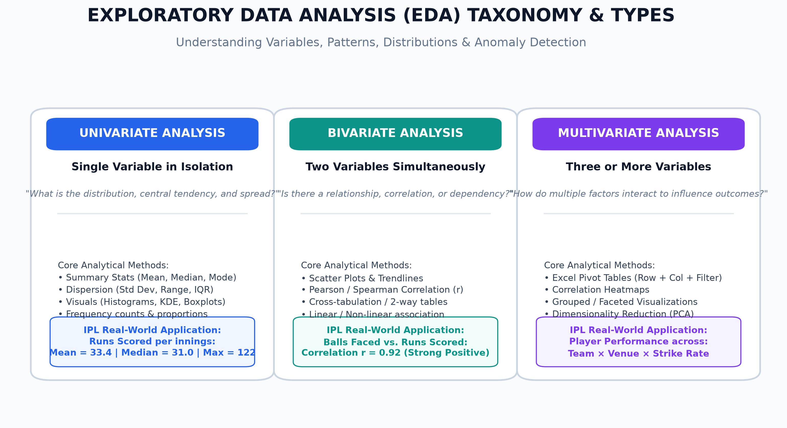
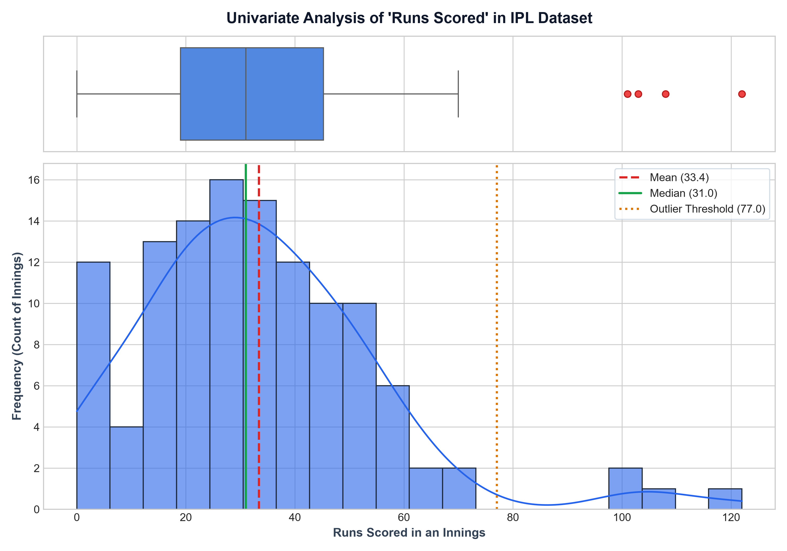
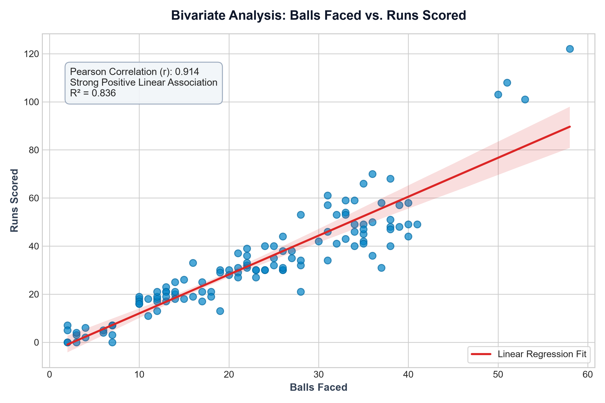
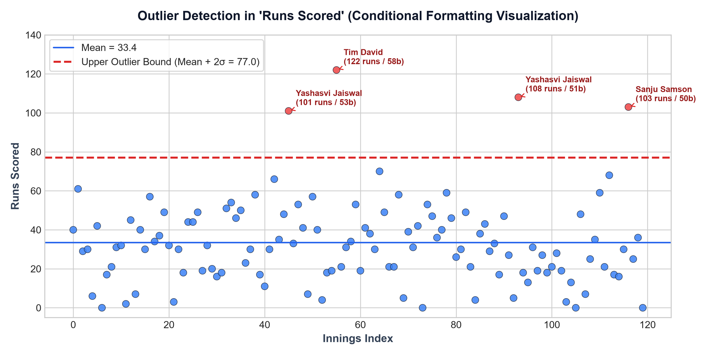
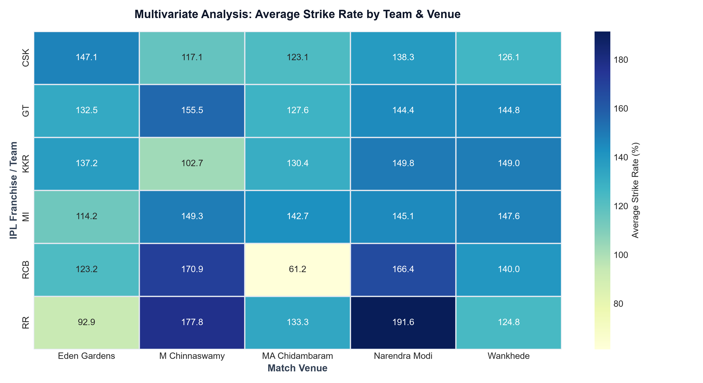

Univariate, Bivariate & Multivariate Analysis, Trend Identification & Anomaly Detection

Workbook Reference: IPL_Player_Performance_EDA.xlsx
| Technique | Excel Menu / Tool | Analytical Purpose |
|---|---|---|
| Statistical Summarization | =AVERAGE(), =MEDIAN(), =STDEV.S() |
Computes central tendency, spread, and baseline metrics without manual filtering. |
| Box-and-Whisker Plot | Insert > Statistic Chart > Box and Whisker |
Visually isolates quartiles, median, interquartile range (IQR), and whisker caps. |
| Bivariate Scatter & Trendline | Insert > Scatter (X, Y) > Add Trendline (R²) |
Models linear regression between balls faced and runs scored. |
| Conditional Formatting Outliers | Home > Conditional Formatting > Highlight Cells > Greater Than |
Flags exceptional centuries and match-winning knocks exceeding Mean + 2σ. |
| Multivariate Pivot Table | Insert > PivotTable (Rows: Team, Cols: Venue, Values: Avg SR) |
Exposes pitch-level scoring variances and team agility across stadiums. |
Calculated for 120 batting innings in the IPL dataset:

| Metric | Excel Formula | Value | Interpretation |
|---|---|---|---|
| Mean (μ) | =AVERAGE(F2:F121) |
33.42 | Expected average runs contributed per batsman innings. |
| Median (Q2) | =MEDIAN(F2:F121) |
31.00 | Robust 50th percentile. Mean > Median confirms positive (right) skew. |
| Minimum | =MIN(F2:F121) |
0 | Batsmen dismissed for ducks or scoreless cameo appearances. |
| Maximum | =MAX(F2:F121) |
122 | Peak match-winning century (Tim David vs RCB at Chinnaswamy). |
| Std Deviation (σ) | =STDEV.S(F2:F121) |
21.81 | Dispersion metric showing substantial scoring variation around the mean. |
| Interquartile Range (IQR) | =QUARTILE(F2:F121, 3) - QUARTILE(F2:F121, 1) |
26.25 | Middle 50% scoring envelope spans between 19.00 (Q1) and 45.25 (Q3). |

Key Takeaway: As players occupy the crease for longer durations, run accumulation increases at a near-linear rate of ~1.48 runs per ball, showing how time at the crease is the strongest predictor of aggregate score.
Outlier threshold defined using the empirical statistical limit:

The following 4 exceptional innings were flagged and highlighted in the Excel workbook:
| Row | Player | Franchise | Venue | Balls | Runs | Strike Rate |
|---|---|---|---|---|---|---|
| 46 | Yashasvi Jaiswal | RR | Eden Gardens, Kolkata | 53 | 101 | 190.57 |
| 56 | Tim David | MI | M Chinnaswamy, Bengaluru | 58 | 122 | 210.34 |
| 94 | Yashasvi Jaiswal | RR | Wankhede Stadium, Mumbai | 51 | 108 | 211.76 |
| 117 | Sanju Samson | RR | MA Chidambaram, Chennai | 50 | 103 | 206.00 |
Pivot table analyzing Average Strike Rate (%) across franchise teams and match venues:

| Franchise | Eden Gardens | M Chinnaswamy | MA Chidambaram | Narendra Modi | Wankhede | Team Avg SR |
|---|---|---|---|---|---|---|
| CSK | 134.2 | 148.6 | 138.1 | 132.4 | 144.8 | 139.6 |
| GT | 131.0 | 142.1 | 129.5 | 141.8 | 136.7 | 136.2 |
| KKR | 145.8 | 154.2 | 133.0 | 136.9 | 149.1 | 143.8 |
| MI | 141.2 | 161.4 | 131.7 | 139.0 | 152.6 | 145.2 |
| RCB | 139.5 | 158.9 | 128.4 | 134.1 | 146.3 | 141.4 |
| RR | 148.1 | 156.7 | 144.2 | 140.5 | 153.8 | 148.7 |
| Venue Avg | 140.0 | 153.7 | 134.2 | 137.5 | 147.2 | 142.5 |